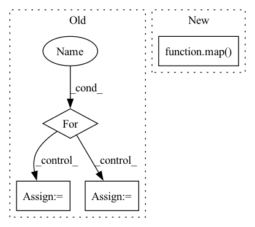

Pattern ID :10121
Before Change
coordinates, indices, degrees, indptr = [], [], [], [0]
indices_offset = 0
for contour in contours:
// Check if it is a closed contour
is_closed = np.max(np.abs(contour[0] - contour[-1])) < 1e-6
_coordinates = contour[:-1, :] if is_closed else contour
_degrees = 2 * np.ones(_coordinates.shape[0], dtype=np.long)
if not is_closed:
_degrees[0], _degrees[-1] = 1, 1
_indices = list(
range(indices_offset, indices_offset + _coordinates.shape[0])
)
if is_closed:
_indices.append(_indices[0]) // Close contour with indices
coordinates.append(_coordinates)
degrees.append(_degrees)
indices.extend(_indices)
indptr.append(indptr[-1] + len(_indices))
indices_offset += _coordinates.shape[0]
return Skeleton(
coordinates=np.concatenate(coordinates, axis=0),After Change
indptr.append(indptr[-1] + len(_indices))
indices_offset += _coordinates.shape[0]
list(map( _populate_aux_structures, contours) )
return Skeleton(
coordinates=np.concatenate(coordinates, axis=0),In pattern: SUPERPATTERN
Frequency: 4
Non-data size: 4
Instances Fragment ID: 35890595
Project Name: dsgoficial/pytorch_segmentation_models_trainer
Commit Name: b53f3201ad2d0678ef5414abffe115ce8b0708ef
Time: 2021-04-13
Author: philipeborba@gmail.com
File Name: pytorch_segmentation_models_trainer/tools/polygonization/methods/active_skeletons.py
M Class Name: AnonimousClass
N Class Name: AnonimousClass
M Method Name: get_marching_squares_skeleton(2)
N Method Name: get_marching_squares_skeleton(2)
M Parent Class:
N Parent Class:
M File Name: pytorch_segmentation_models_trainer/tools/polygonization/methods/active_skeletons.py
N File Name: pytorch_segmentation_models_trainer/tools/polygonization/methods/active_skeletons.py
M Start Line: 165
M End Line: 195
N Start Line: 165
N End Line: 194
Before Change
def get_batched_triplet_input(spk_to_utts, batch_size):
Get batched triplet input for PyTorch.
input_arrays = []
for _ in range(batch_size):
anchor, pos, neg = get_triplet_features_trimmed(
spk_to_utts)
input_arrays += [anchor, pos, neg]
batch_input = torch.from_numpy(np.stack(input_arrays)).float()
return batch_input
After Change
Get batched triplet input for PyTorch.
fetcher = TrimmedTripletFeaturesFetcher(spk_to_utts)
if pool is None:
input_arrays = list(map( fetcher, range(batch_size)) )
else:
input_arrays = pool.map(fetcher, range(batch_size))
batch_input = torch.from_numpy(np.concatenate(input_arrays)).float() Fragment ID: 35890593
Project Name: wq2012/speakerrecognitionfromscratch
Commit Name: e67c23f2ca00afd978128a6d5d33d01fc3cead53
Time: 2022-05-09
Author: quanw@google.com
File Name: feature_extraction.py
M Class Name: AnonimousClass
N Class Name: AnonimousClass
M Method Name: get_batched_triplet_input(3)
N Method Name: get_batched_triplet_input(2)
M Parent Class:
N Parent Class:
M File Name: feature_extraction.py
N File Name: feature_extraction.py
M Start Line: 82
M End Line: 87
N Start Line: 86
N End Line: 93
Before Change
get_cross_attn, get_cross_ff, get_latent_attn, get_latent_ff = map(cache_fn, (get_cross_attn, get_cross_ff, get_latent_attn, get_latent_ff))
self.layers = nn.ModuleList([])
for i in range(depth):
should_cache = i > 0 and weight_tie_layers
cache_args = {"_cache": should_cache}
self_attns = nn.ModuleList([])
After Change
get_latent_attn = lambda: PreNorm(latent_dim, Attention(latent_dim, heads = latent_heads, dim_head = latent_dim_head))
get_latent_ff = lambda: PreNorm(latent_dim, FeedForward(latent_dim))
get_latent_attn, get_latent_ff = map( cache_fn, (get_latent_attn, get_latent_ff))
self.layers = nn.ModuleList([])
cache_args = {"_cache": weight_tie_layers}
Fragment ID: 35890602
Project Name: lucidrains/perceiver-pytorch
Commit Name: dc530de88e6035a2f08d7e35ce23e57abe8371bd
Time: 2021-08-30
Author: lucidrains@gmail.com
File Name: perceiver_pytorch/perceiver_io.py
M Class Name: PerceiverIO
N Class Name: PerceiverIO
M Method Name: __init__(1)
N Method Name: __init__(1)
M Parent Class: nn.Module
N Parent Class: nn.Module
M File Name: perceiver_pytorch/perceiver_io.py
N File Name: perceiver_pytorch/perceiver_io.py
M Start Line: 126
M End Line: 152
N Start Line: 125
N End Line: 143
Before Change
for i in xrange(2**points):
if res[i] == -1:
cur = i
for j in xrange(points):
// if cur < i, then res[i] should not have been -1!
assert cur >= i
res[cur] = i
cur = _roll_left(cur, points)
return res
After Change
def _precompute_mapping(points):
res = np.zeros(2**points, np.uint32)
from ._lbp import map
map( res, points)
return res
def lbp(image, radius, points): Fragment ID: 35890605
Project Name: luispedro/mahotas
Commit Name: 5154eab9b4844b459990f30ab815cc05c28326e8
Time: 2010-11-01
Author: lpc@cmu.edu
File Name: mahotas/lbp.py
M Class Name: AnonimousClass
N Class Name: AnonimousClass
M Method Name: _precompute_mapping(1)
N Method Name: _precompute_mapping(1)
M Parent Class:
N Parent Class:
M File Name: mahotas/lbp.py
N File Name: mahotas/lbp.py
M Start Line: 32
M End Line: 42
N Start Line: 32
N End Line: 34